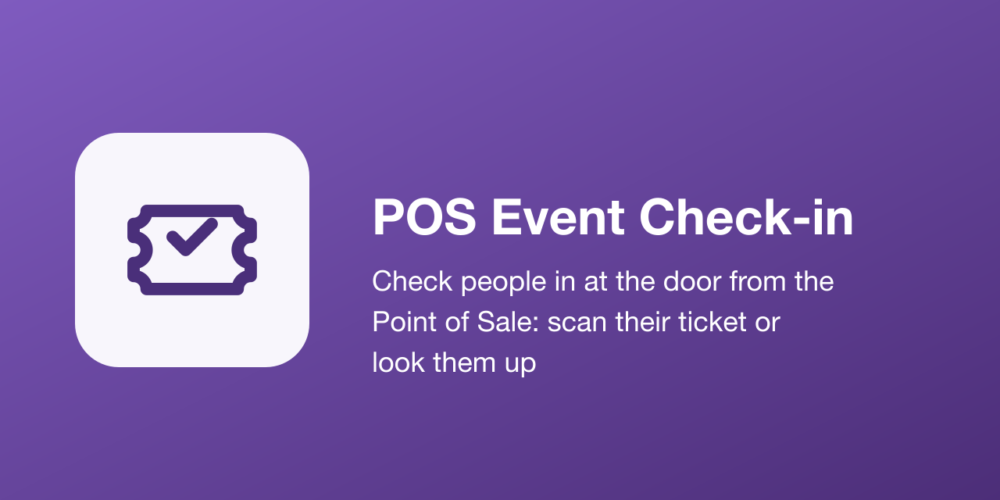

Odoo's Point of Sale already sells event tickets at the door. This adds the other half: checking in the people who bought their tickets beforehand, at the same till.
Scan a ticket and it's checked in with the Registration Desk's rules, or open the door list to find someone by name and see how many are in.
Scanner or the device's camera; product barcodes still work.
Checked in, already in (and when), another day's ticket, cancelled or unconfirmed.
Today's attendees with search and a running "42 of 120 in".
Other days' and other companies' tickets are never checked in by mistake.
This module is free. Help installing, setting up or using it is available from Meskis Works with a support contract: sales@meskis.net.